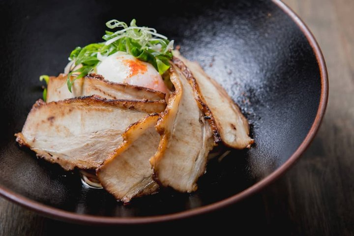

広告（PR）｜ふるさと納税

広島県のラーメン店を市区別に、全14エリア・140店から厳選しました。各エリアの1位には、広島市中区「おっくん堂」（★4.6）、広島市南区「一平や」（★4.6）、広島市西区「らーめん与壱 三篠本店」（★4.2）などが並びます。気になるエリアのページから、おすすめ順のランキングをご覧ください。
広島市中区ラーメン10選
1位：おっくん堂（★4.6／1,534件）
広島市南区ラーメン10選
1位：一平や（★4.6／904件）
広島市西区ラーメン10選
1位：らーめん与壱 三篠本店（★4.2／952件）
広島市安佐南区ラーメン10選
1位：ラーメン十五屋（★4.4／1,052件）
広島市安佐北区ラーメン10選
1位：中華そば ◯ 久地店（★4.4／285件）
広島市佐伯区ラーメン10選
1位：ラーメン我馬 五日市店（★4.2／638件）
尾道市ラーメン10選
1位：尾道ラーメン しょうや（★4.4／1,540件）
東広島市ラーメン10選
1位：中華蕎麦マーヤ（★4.2／298件）
東区・安芸区エリア ラーメン10選
1位：ラーメン・焼き鳥 山創（★4.3／639件）
呉・江田島エリア ラーメン10選
1位：元祖 呉冷麺 珍来軒（★4.1／918件）
三原・竹原エリア ラーメン10選
1位：塩そば まえだ（★4.3／1,135件）
福山・府中エリア ラーメン10選
1位：尾道ラーメン一丁（★4.1／2,932件）
三次・庄原・安芸高田エリア ラーメン10選
1位：ドライブインミッキー庄原本店（★4.1／809件）
廿日市・大竹エリア ラーメン10選
1位：広島ラーメン 椛 宮島口本店（★4.5／1,713件）
選定基準｜おすすめ順の決め方
広島県全体の順位は、次の方法で決めています。
- 算出方法：Googleマップの評価（★）を主軸に、口コミ件数と食べログの点数・口コミ数を加味した「おすすめ順」です。評価が高く、口コミの母数が多い店ほど上位になります。
- 実測日：掲載している評価・口コミ件数は、2026年11月3日にGoogleマップ・食べログで確認した実測値です。
- 順位と広告の関係：順位は広告・提携の有無とは一切関係ありません。本ページにはアフィリエイト広告（PR）が含まれますが、店舗の順位には影響しません。